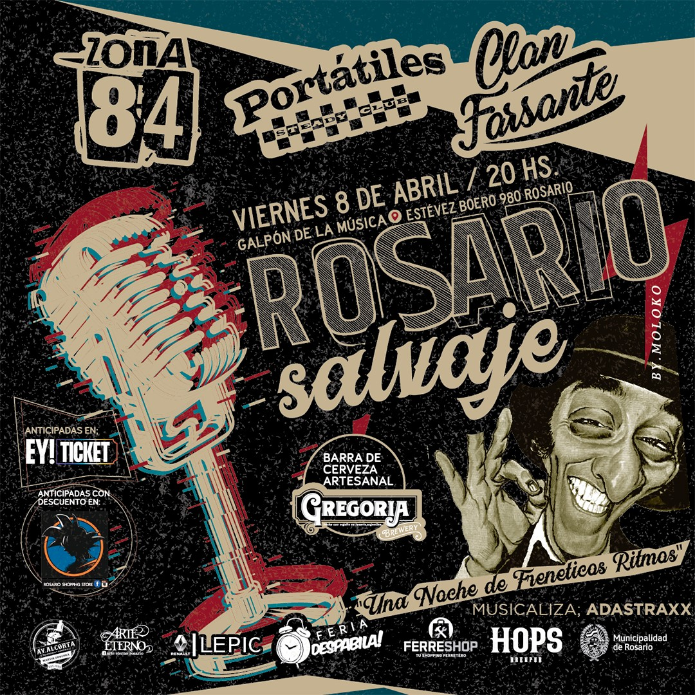

ROSARIO SALVAJE
... justo sobre los restos del puerto que le dio su espíritu indomable, Rosario Salvaje es la
excusa
perfecta para reunir todos esos freneticos ritmos que deambulan por la ciudad. La noche ideal
para
sumergirse en sus historias, su arrabal, mitos y leyendas al ritmo del mas exquisito y primitivo
Rock N'
Roll!
- 📢VIERNES 8 DE ABRIL 20 hs
- Galpón 11 (Estévez Boero 980)
- ZONA 84
- Portatiles Steady Club
- Clan Farsante
Anticipadas con Descuento en Rosario shopping Store. Mitre 960. (Galeria La Comedia) Local 2.
